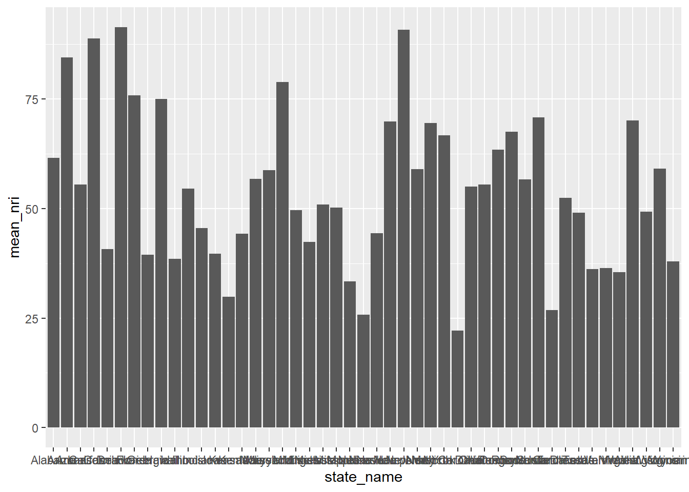
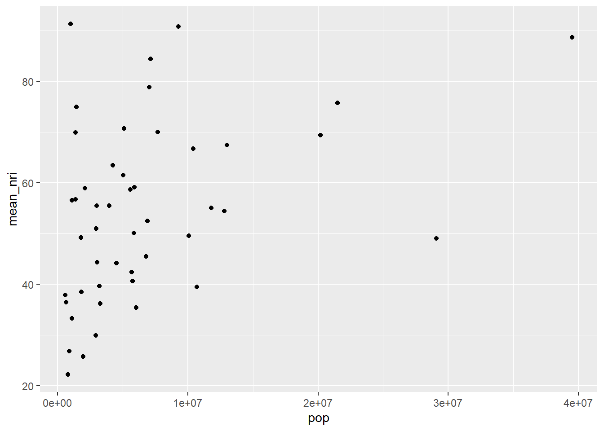
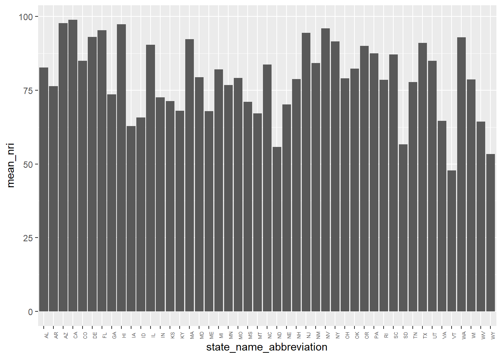
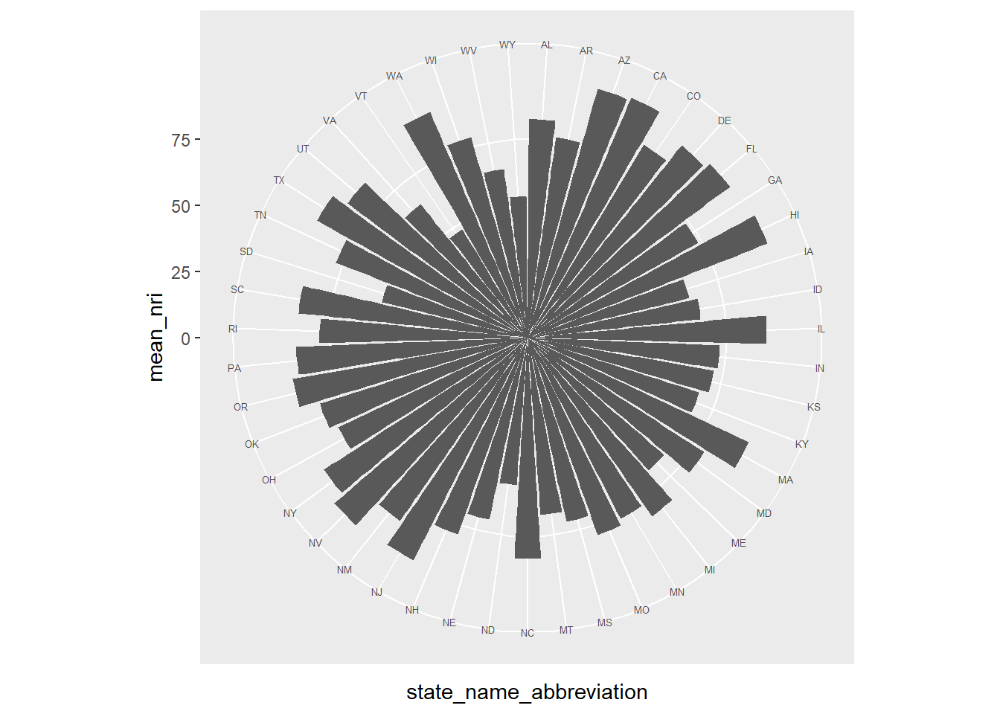
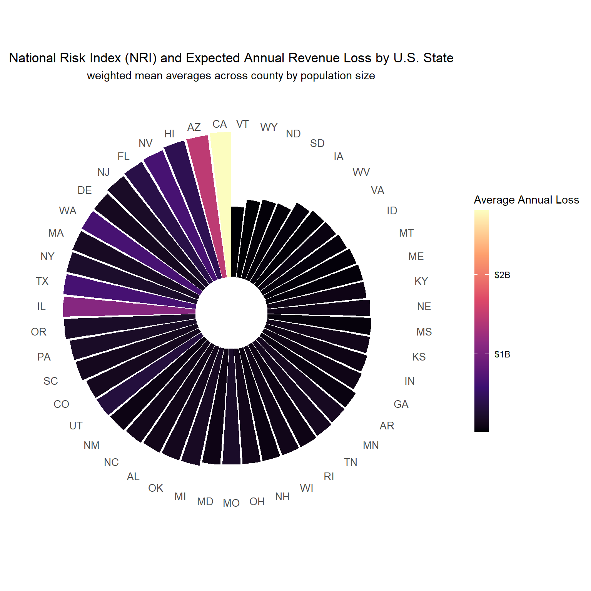

# Read in libraries
library(tidyverse)
library(here)
library(janitor)EDS 240: Visualizing FEMA NRI Data
Summary
This workflow aims to use FEMA National Risk Index NRI data to compare California NRI value to the rest of the U.S. The code includes the wrangling, exploration, and final visualization to represent California’s risk compared to other states.
Setup
# Read in NRI data
nri <- read.csv(here("data", "National_Risk_Index_Counties_807384124455672111.csv")) %>%
clean_names() %>%
filter(!state_name %in% c("District of Columbia", "American Samoa", "Guam", "Northern Mariana Islands", "Virgin Islands", "Puerto Rico")) %>%
filter(county_type == "County")EDA
# Group by state and take a mean of NRI values
nri_state <- nri %>%
group_by(state_name) %>%
summarise(mean_nri = mean(national_risk_index_score_composite),
pop = sum(population_2020)) %>%
ungroup()
# Visualize in a column plot
ggplot(data = nri_state, aes(x = state_name, y = mean_nri))+
geom_col()
This visualization highlights that states with larger populations have generally higher mean NRIs. This is probably inflated by population/ income.
# Visualize how mean NRI correlates to population size
ggplot(data = nri_state, aes(x = pop, y = mean_nri)) +
geom_point()
This suggests that NRI is linked to population. From here, how does NRI in California compare if we standardize for population size.?
# Use a weighted mean to evaluate composite NRI between states
nri_norm <- nri %>%
group_by(state_name_abbreviation) %>%
summarise(
mean_nri = weighted.mean(national_risk_index_score_composite, population_2020, na.rm = TRUE),
mean_loss = weighted.mean(expected_annual_loss_total_composite, population_2020, na.rm = TRUE)
)
# Create another column plot
ggplot(nri_norm, aes(x = state_name_abbreviation, y = mean_nri)) +
geom_col() +
theme(axis.text.x = element_text(angle = 90, size = 5))
This makes it hard to visually compare all states relatively. From here, explore ways to highlight trends in states without too much eye movement.
# Make a polar plot
ggplot(nri_norm, aes(x = state_name_abbreviation, y = mean_nri)) +
geom_col() +
coord_polar()+
theme(axis.text.x = element_text(size = 5))
Organize and beautify!
# Create a polar column plot in NRI value order
ggplot(nri_norm, aes(
# Add columns by state, reorder by the mean NRI value
x = reorder(state_name_abbreviation, mean_nri),
# Column height is determined by weighted mean NRI
y = mean_nri,
# Fill values by the weighted average of loss by county
fill = mean_loss
)) +
# Use column plot
geom_col() +
# Make axis radial- adjust inner radius
coord_radial(inner.radius = 0.2, expand = FALSE) +
# Fill colors and adjust color bar title and labels
scale_fill_viridis_c(option = "magma",
labels = scales::label_dollar(scale_cut = scales::cut_short_scale())
) +
theme_minimal() +
theme(
# Adjust state name text
axis.text.x = element_text(
size = 10),
# Remove y axis labels from side of plot
axis.text.y = element_blank(),
# Remove gridded lines
panel.grid = element_blank(),
# Adjust title position
plot.title = element_text(hjust = 0.5),
plot.subtitle = element_text(hjust = 0.5)
) +
guides(fill = guide_colorbar(title = "Average Annual Loss",
barwidth = 1,
barheight = 15))+
# Add plot labels
labs(title = "National Risk Index (NRI) and Expected Annual Revenue Loss by U.S. State",
subtitle = "weighted mean averages across county by population size",
x = NULL,
y = NULL)
Written response
- What are your variables of interest and what kinds of data (e.g. numeric, categorical, ordered, etc.) are they (a bullet point list is fine)?
- State name
- NRI composite score (numeric)
- Annual average loss (numeric)
- How did you decide which type of graphic form was best suited for answering the question? What alternative graphic forms could you have used instead? Why did you settle on this particular graphic form?
I wanted an easier way to compare all states with county level NRI rankings. This was hard to do in a format like a bar chart because there is a lot of eye movement that needs to happen to interpret relationships. I thought a centralized polar plot could work better for this purpose to compare relative height, especially when reordered. I also considered a cartogram, but thought it would be hard to add another numeric category such as annual loss visually.
- Summarize your main finding in no more than two sentences.
California has the highest relative average NRI across counties of all U.S. states, even adjusting for population size. California also has the highest average annual loss value by county compared to other states.
- What modifications did you make to this visualization to make it more easily readable?
I changed the color scale and reordered the bars in height order. Luckily it is easy to see California even without implementing gghighlight because of it’s really high annual loss value compared to other states, so it pops from the selected color palette. Reordering the bars made it easy to see that California had the highest NRI by county.
- Is there anything you wanted to implement, but didn’t know how? If so, please describe.
I wanted to see if I could wrangle the data to find the top 5 attributes contributing to the associated loss across each state and stack the columns to compare causes. This would have just taken a lot more wrangling and metadata exploration than I was prepared to do without setting up a function to loop through the data frame.